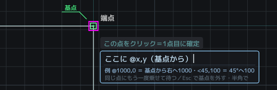

6. Object snap and drawing constraints
Object snap

The cursor sticks exactly to the important points of an object.
吸い付く点＝端点・中点・円と弧の中心・点・交点・かたちの中心・文字（挿入基点・枠の四隅・中央）・原点。
- 原点＝図面の (0,0) そのもの（淡い水色の□に十字）。図形が一つも無くても名乗ります——画面の X→／Y↑ の標が立っている、まさにあの場所です。別の図面と座標を揃えたいとき、3Dの器で共通の基点を取るときに、クリックひとつで掴めます。※原点に図形の角があるときは「端点」が先に名乗ります（本物の点が先）。
- かたちの中心＝閉じた形の真ん中（藤色の□に点）。四角・ポリゴン（正多角形）・閉じたポリラインで名乗ります。例：六角ボルトの芯にネジ穴を描く——中心に吸い付けます。※空中の点なので、本物の点（端点など）が近くにあるとそちらが先に名乗ります。Tab で送れば手が届きます。
- 対角の交点＝四角形の対角線が交わる点（水色の□に×）。※かたちの中心（重心）とは別の点です。長方形なら同じ所に来ますが、台形や不等辺の四角では、はっきり違う所に来ます。現場で「対角を引いて、交わった所」を取る、あの一手です。三角には対角線がないので出ません（三角はかたちの中心が重心を名乗ります）。五角以上は対角線が何本もあり、どれか一つに決められないので出ません。
- Besides its two ends, a spline also snaps to the fit points you clicked yourself (the very points you made when you drew the curve). It does not snap to the control points: those are weights floating off the curve, so catching them would mean nothing.
Where candidates overlap, Tab switches between them.
The スナップ (Snap) toggle on the bottom bar turns it on and off.
The constraint toggle (free / ortho / polar)
Each press of the constraint toggle on the bottom bar moves to the next one.
- Free = no constraint. Draw as you please.
- Ortho = right angles only. Horizontal and vertical. F8 switches it too. Hold Shift and it is reversed for as long as you hold.
- Polar tracking = a guide line every so many degrees. Right-click the toggle = change the step (45, say). You can also type POLAR 30 in the Command Line.
Where it takes effect
It works in any tool that already has one point down.
Line, polyline, move, copy, stretch, grips, circle (centre to radius), three-point arc, ellipse, spline, the corners of a hatch, dimensions, the elbow of a leader, arrays, isometric, the axis of a mirror, and unit scaling.
It does not work on the very first point (nothing has yet decided what “horizontal” is measured from — this is the convention across CAD).
Where it does work, the prompt beside the cursor says either “F8＝直交” (F8 = ortho) or “直交ON＝水平・垂直だけ” (ortho on: horizontal and vertical only). If you cannot go diagonally, look there.
※ It is deliberately not applied to the far corner of a rectangle or of a paragraph of text (constraining that corner to right angles would leave you able to draw only squares).
※ Rotation constrains an angle, not a point (ortho on = steps of 90°).
The laser (⌥ Option)
While ⌥ is held, the lines you can point at light up and a note appears.
For apparent intersections (APPINT), ⌥-click adds and removes reference lines one at a time.
Midpoint between two points (M2P)
An interruption that takes the middle of two points you indicate and hands it to the tool you are using.
道具が点を聞いている最中（基点・挿入点・1点目…）にタブ「描く」の［2点間中点］を押すか、小窓で M2P（MTP・真ん中 でも可）と打ち、二点を指すと、その真ん中がそのまま道具に渡ります。
For example, text in the middle of a box in the title block: catch the text by the centre of its shape and move it → M2P → the two opposite corners of the box → it lands in the middle.
Snapping works on each of the two points, so you can use intersections and endpoints exactly.
To stop: right-click or Esc (the tool itself carries on).
Turning the prompt and the distance field on and off
- GUIDE = turns the prompt beside the cursor on and off.
- The 距離DYN toggle = turns the distance field beside the cursor on and off.
Turning them off loses you nothing. Choose whichever suits you.
Correct the manual there and this one is corrected the same day.
絵は Windows 版の画面です（2026年11月に撮り直しました）。Mac 版では、Ctrl が ⌘、Alt が ⌥ になります。